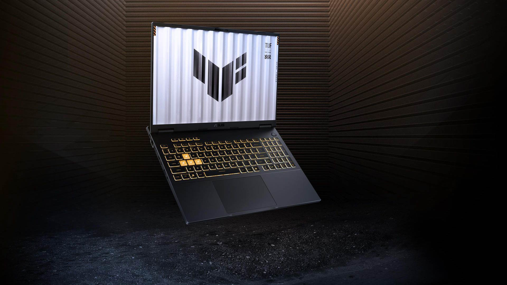
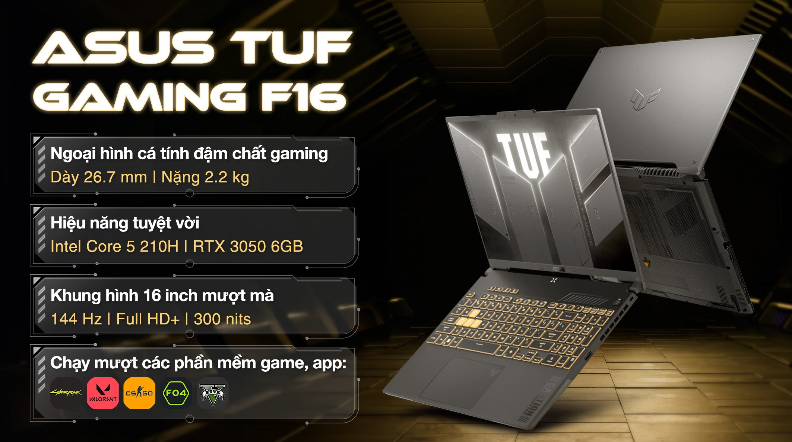

Giới thiệu Laptop ASUS TUF Gaming F16


Đặc điểm nổi bật
- Tích hợp AI tối ưu tác vụ
- Sức mạnh hiệu năng vượt trội từ Intel Core 5 210H
- RAM và ổ cứng hiệu năng cao
- Thiết kế mạnh mẽ ấn tượng, màu sắc Gaming
- Màn hình 144Hz mượt mà, hình ảnh sống động
Thông số kỹ thuật
| Linh kiện | Thông số cơ bản | Trải nghiệm thực tế |
|---|---|---|
| Loại card đồ họa |
NVIDIA GeForce RTX 3050 6GB GDDR6 Intel Iris Xe Graphics |
Hiệu năng đồ họa mượt mà, trải nghiệm gaming tốt |
| Dung lượng RAM | 16GB | Đáp ứng tốt các tác vụ đa nhiệm, chơi game mượt mà |
| Loại RAM | DDR4-3200 SO-DIMM | Tốc độ truy xuất nhanh, ổn định |
| Số khe ram | 2 khe (1 x 16GB, nâng cấp tối đa 64GB) | Dễ dàng nâng cấp bộ nhớ theo nhu cầu |
| Ổ cứng | 512GB PCIe 4.0 NVMe M.2 SSD (2 Khe cắm M.2 hỗ trợ SATA hoặc NVMe, tối đa 2TB) | Tốc độ đọc/ghi nhanh, lưu trữ dữ liệu hiệu quả |
| Kích thước màn hình | 16 inches | Màn hình lớn, trải nghiệm xem phim và chơi game tốt |
| Công nghệ màn hình |
Độ sáng 300nits Độ phủ màu NTSC 45% Màn hình chống chói |
Hình ảnh sắc nét, màu sắc trung thực |
| Pin | 56WHrs, 4S1P, 4-cell Li-ion | Thời lượng pin tốt, phù hợp cho việc sử dụng di động |
| Hệ điều hành | Windows 11 Home | Hệ điều hành ổn định, hỗ trợ tốt các ứng dụng |
| Độ phân giải màn hình | 1920 x 1200 pixels (WUXGA) | Hình ảnh rõ nét, trải nghiệm xem phim tốt |
| Loại CPU | Intel Core 5 210H 2.2 GHz (12MB Cache, up to 4.8 GHz, 8 lõi, 12 luồng) | Hiệu năng xử lý mạnh mẽ, đáp ứng tốt các tác vụ nặng |
| Cổng giao tiếp |
1x Cổng LAN RJ45 1x USB 3.2 Gen 2 Type-C hỗ trợ DisplayPort / cấp nguồn (tốc độ dữ liệu lên đến 10Gbps) 2x USB 3.2 Gen 1 Type-A (tốc độ dữ liệu lên đến 5Gbps) 1x HDMI 2.1 FRL 1x 3.5mm Combo Audio Jack |
Kết nối đa dạng, hỗ trợ tốt các thiết bị ngoại vi |
Ưu điểm và Hạn chế
Ưu điểm
- Thiết kế bền bỉ, chắc chắn
- Cấu hình mạnh mẽ, đáp ứng tốt các tác vụ gaming và đồ họa
- Màn hình 144Hz mượt mà, hình ảnh sống động
- Hệ thống tản nhiệt hiệu quả, giữ nhiệt độ ổn định
Hạn chế
- Trọng lượng khá nặng, không thuận tiện cho việc di chuyển
- Thời lượng pin trung bình, cần sạc thường xuyên khi sử dụng gaming